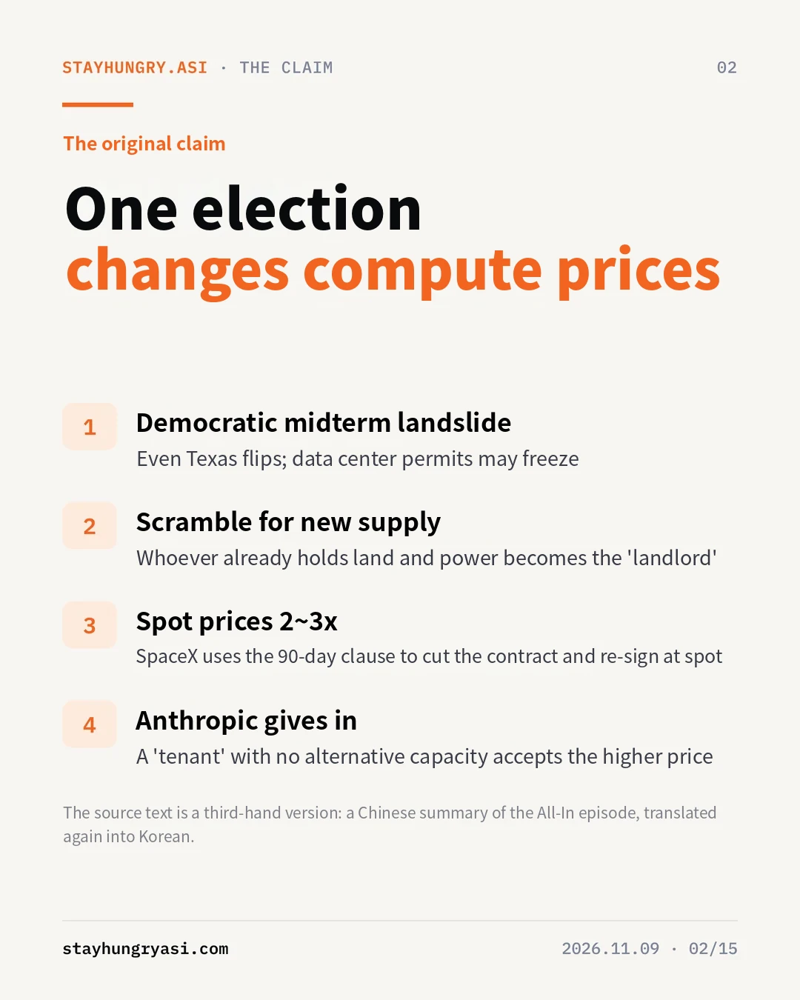
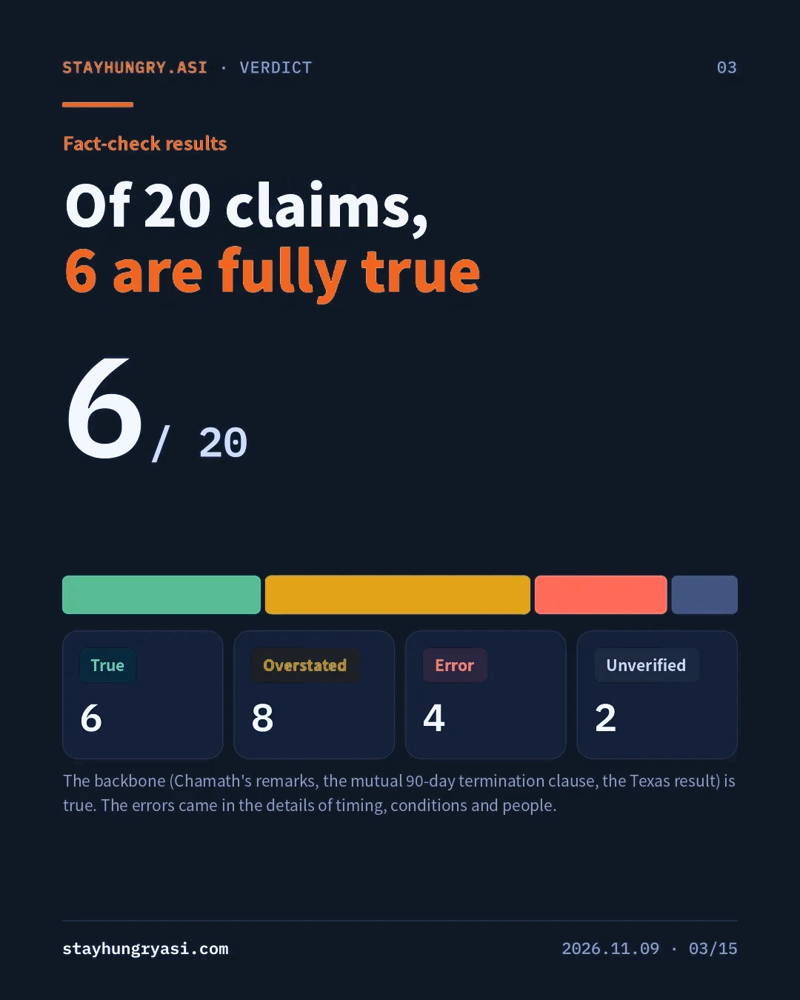
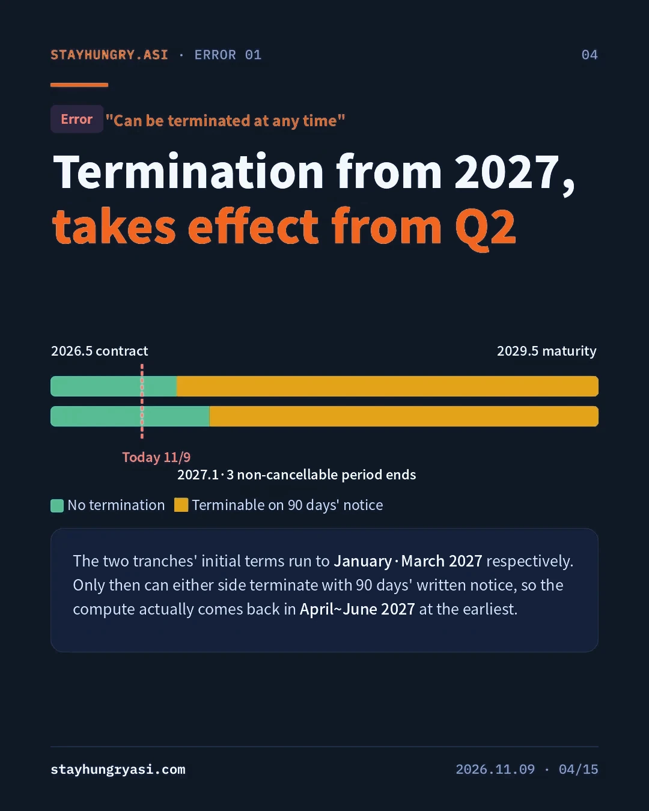
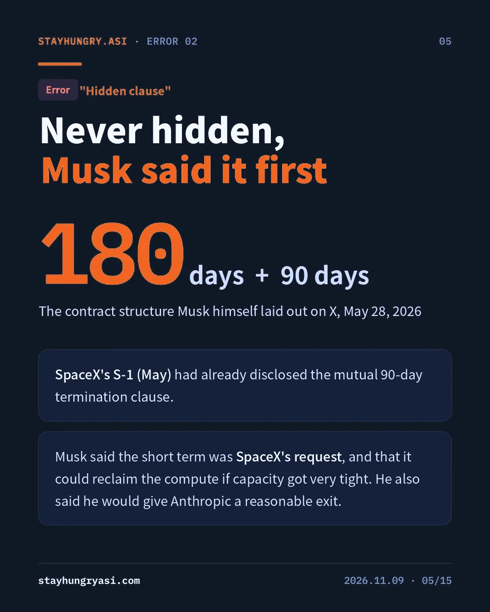
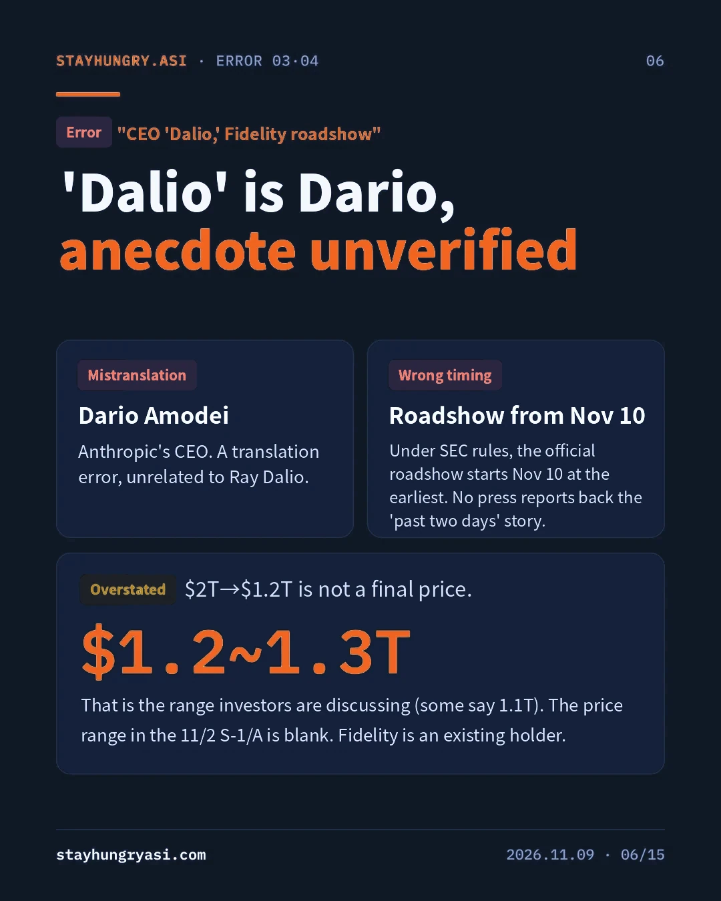
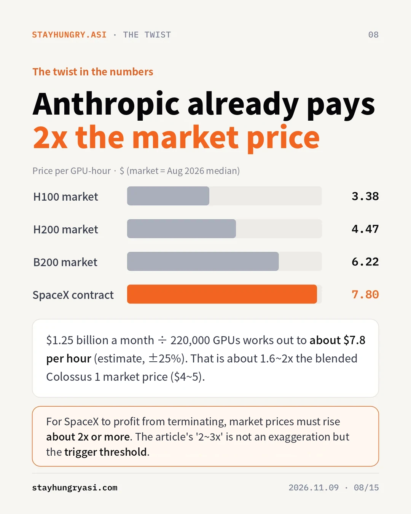
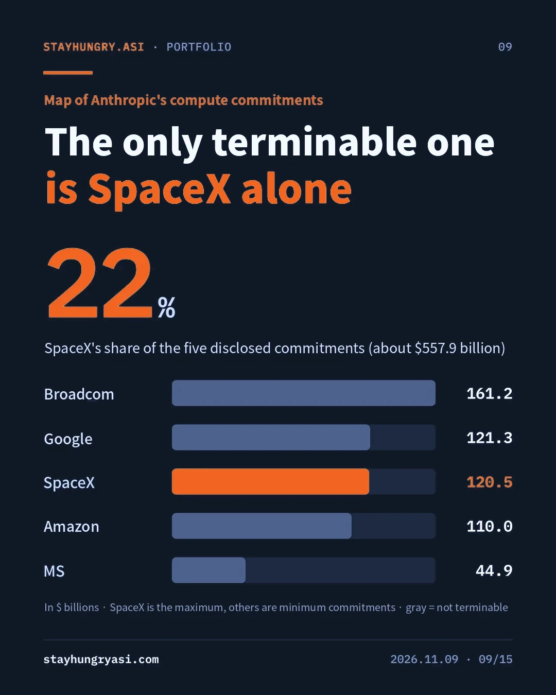
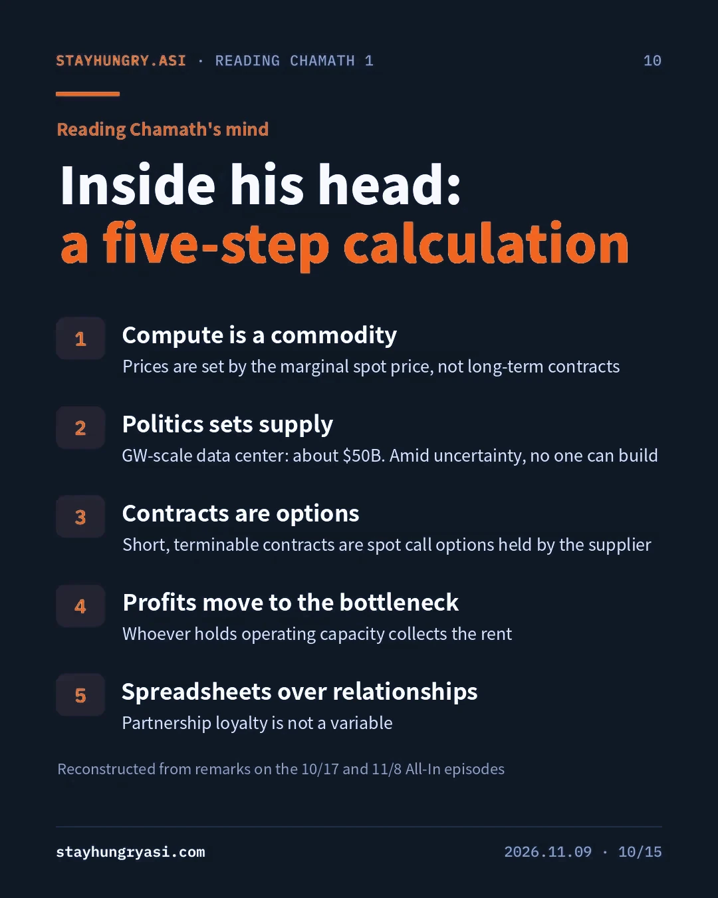
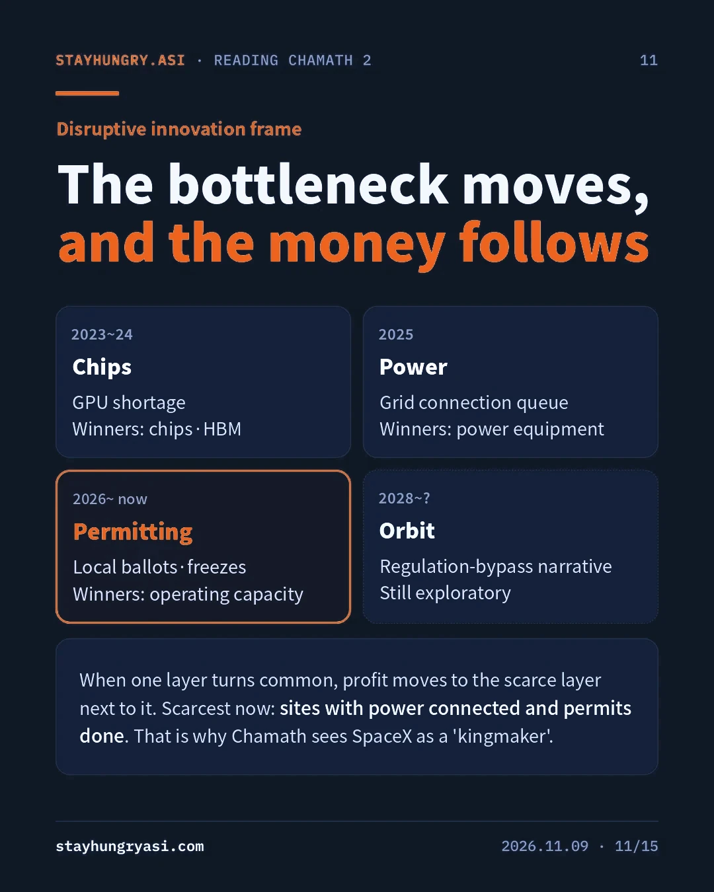

Data as of Nov 9, 2026 (KST) · stayhungryasi.com
Conventions: figures are facts as reported by the sources. "Estimate" marks the author's judgment, and scenario probabilities are the author's subjective judgment. The 20 claims in the original article were checked against primary sources.
Conflict of interest: This research was written with Anthropic's AI (Claude), and the text covers Anthropic's contracts and IPO. It is not investment advice.
The key points in 15 cards. Click an image to enlarge it.









The subject of the check is a Korean-language article circulating in Korea. The original remarks are from the Nov 8 episode of the All-In podcast; a Chinese summary of them appears to have been machine-translated again into Korean. Leftover Chinese-character spellings in the text, such as '各地' and 'hu槽歯' (a Chinese idiom meaning to grit one's teeth, with its first syllable rendered in Korean script), are the traces.
From the original we extracted 20 factual claims involving numbers, people, dates, contract terms and anecdotes, and checked them against SpaceX's and Anthropic's SEC filings (S-1, S-1/A) and reporting by Bloomberg, Reuters, CNBC, the FT and MarketWatch.
| Stage | Content | Distortion found |
|---|---|---|
| Original | All-In podcast, 11/8 episode | The remarks themselves are confirmed. "$4 trillion wiped out in a day" is the show's wording and is larger than the tallied figures |
| Second-hand rewrite | Chinese summary (estimate) | Dropped the lock-in condition; described a disclosed clause as a "hidden clause" |
| Third-hand rewrite | Korean translation | Wrote CEO Dario Amodei as "Dalio"; a Fidelity roadshow anecdote that cannot be confirmed |
Of the 20 claims, 6 were rated True, 8 Partly true/Overstated, 4 Error and 2 Unverified. The backbone of the argument (that the remarks were made, the mutual termination clause, the election results) is true, but errors appeared in the details that determine the timing and conditions of the leverage.
| Claim in the original | Verdict | Verified facts |
|---|---|---|
| The contract has a two-way 90-day termination clause | True | A mutual termination clause on 90 days' written notice is disclosed in the SpaceX S-1 (May 2026) and the Anthropic S-1 (Oct 26) |
| It can be terminated "at any time" | Error | The initial terms run until January and March 2027, by tranche. Only after that can either side give 90 days' notice |
| The clause is "hidden" | Error | Disclosed in the May S-1. On May 28, Musk himself said on X that the structure is a 180-day lease followed by mutual 90-day termination, and that the short term was SpaceX's request |
| CEO "Dalio" thanked investors | Error | Anthropic's CEO is Dario Amodei. The anecdote is not confirmed by any reporting |
| A Fidelity roadshow over the past two days | Error | Under SEC rules the official roadshow can start Nov 10 at the earliest. Fidelity is an existing holder |
| About $4 trillion in market cap wiped out | Overstated | On Nov 5 alone, about $2.9 trillion for the S&P 500 (the largest one-day loss on record); about $3 trillion per Reuters; $3.2 trillion for all of Wall Street per the FT |
| IPO value cut from $2 trillion to $1.2 trillion | Overstated | The range under discussion among investors is $1.2~1.3 trillion (some say $1.1 trillion). The price range in the Nov 2 S-1/A is blank |
| Worst defeat since Watergate | Overstated | Reported as comparable in scale to 1974. Republicans lost 48 House seats in 1974; the Democratic swing this time is up to 40 seats, pending the final count |
| Texas flipped Democratic | True | In the governor's race Hinojosa beat incumbent Abbott, and Talarico won the Senate seat |
| Governors are shunning data centers | Overstated | At least 29 localities passed bans or restrictions, with 1 in favor. Most votes are nonbinding, and Abbott had already halted approvals |
| Spot prices could go 2~3x | Unverified | A forecast. B200 spot prices have a record of already more than doubling since March 2026 |
| "It's a spreadsheet problem, not a relationship problem" | True | A remark to the same effect appears in the episode summary |
12 key claims of the 20 are shown. Criteria: True (matches primary sources), Overstated (right direction, but figures or scope inflated), Error (contradicts the sources), Unverified (a forecast, or no reporting).
The original describes SpaceX as if it could cut the contract right now, but the disclosed terms say otherwise. Under the SpaceXAI contract, Anthropic agreed to spend up to $120.5 billion through 2029, and pays about $3.1 billion a month after December 2026, when full capacity is delivered. Notice of termination is possible only after the initial terms of both tranches end.
Even if notice were given today, the compute would actually be taken back only in Q2 2027. Termination-related news before then is more reasonably read as positioning ahead of renewal talks.
The Phase 1 contract is $1.25 billion a month for 300MW or more and 220,000 or more Nvidia GPUs. Converted, that is about $7.8 per GPU per hour, or about $50 billion a year per GW (estimate). The per-GW figure matches what Chamath cited on the Oct 17 show: about $50 billion for SpaceX and about $20 billion for CoreWeave.
Colossus 1 mixes H100, H200 and GB200, so the comparable blended market price is estimated at $4~5. The contract price is 1.6~2x that, and once the 90-day gap and the friction of re-leasing after a termination are factored in, market prices would need to rise about 2x or more for SpaceX to gain from terminating. The original's "spot at 2~3x" is less an exaggerated figure than the threshold at which the leverage actually kicks in.
Of the 5 stated major commitments, totaling about $557.9 billion, SpaceX accounts for about 22%. Google and Amazon cannot be terminated except for the counterparty's material uncured breach, and the rest are also non-terminable. That makes this clause also the first exit Anthropic could use when the market cools.
| Scope | One-day loss on Nov 5 | Source |
|---|---|---|
| Claim in the original | About $4 trillion | All-In show wording |
| All of Wall Street | $3.2 trillion | FT |
| S&P 500 | About $3 trillion | Reuters |
| S&P 500 | About $2.9 trillion (largest one-day loss on record) | MarketWatch |
| Nasdaq-100 | $2.3 trillion | Bloomberg |
| Magnificent 7 | $1 trillion | CNBC |
The one-day loss in US stocks was $2.9~3.2 trillion. $4 trillion is approached only in a global total that adds Asian markets (estimate).
Stitching together Chamath's remarks on the Oct 17 and Nov 8 shows reveals one consistent line of thinking. He is looking at changes in market structure rather than technology.
| Step | Content | Supporting remark (gist) |
|---|---|---|
| 1. Compute is a commodity | Price is set by the marginal spot price, not long-term contracts | The gap between fixed contracts and spot is so wide that long-term suppliers are leaving $20~30 billion on the table (10/17) |
| 2. Politics sets supply | Permit freezes make the supply curve inelastic | A GW-scale data center costs about $50 billion; under uncertainty nobody can make that investment (11/8) |
| 3. Contracts are options | Short, terminable contracts are spot call options held by the supplier | The very fact that Musk signed a contract terminable on 90 days is a signal of rising spot prices (10/17) |
| 4. Profit moves to the bottleneck | Owners of operating capacity collect the rent | Compute scarcity makes the hyperscalers and SpaceX kingmakers (11/8) |
| 5. Spreadsheet over relationships | Partnerships are not a pricing variable | A purely economic matter, unrelated to relationships or whether a company is good or bad (11/8) |
Christensen's "law of conservation of attractive profits" makes the structure clear. When one layer of the value chain becomes commoditized, profit shifts to an adjacent scarce layer. The bottleneck in AI infrastructure moved from chips (GPU shortages) in 2023~24 to power (grid interconnection queues) in 2025, and to permits (local votes and freezes) in 2026. What is scarcest now is sites with power connected and permits done, and whoever already holds them has the negotiating power.
| Period | Bottleneck | Pattern | Main beneficiaries |
|---|---|---|---|
| 2023~24 | Chips | GPU shortages | Chip and HBM suppliers |
| 2025 | Power | Grid interconnection queues | Power equipment, generation |
| 2026~ | Permits | Local votes, approval freezes | Owners of operating capacity |
| 2028~ (estimate) | Orbit | A narrative of bypassing ground regulation; exploratory stage | Still uncertain |
Musk's mention of the appeal of space data centers right after the election fits the same trend. But orbital compute cooperation with Anthropic is disclosed only at the level of an "expression of interest," so it is too early to use as a basis for judgment.
| Item | Premise of Chamath's logic | Check result |
|---|---|---|
| Timing | Can be exercised as soon as supply tightens | Cannot take effect before Q2 2027. The new Texas governor also takes office only on January 19, 2027 |
| Threshold | When spot rises, existing contracts lose money | The contract price is already 1.6~2x the market. Spot would have to rise about 2x before termination pays |
| Symmetry | The clause is the landlord's weapon | In a downturn the same clause is Anthropic's put option. The first operating profit of SpaceX's AI segment also came, in effect, from a single customer, Anthropic |
| Item | SpaceX | Anthropic | Edge |
|---|---|---|---|
| Alternative demand / suppliers | Google also contracted Colossus capacity at $920 million a month; in-house Grok demand | Has Google, Amazon and MS commitments, but disclosed that it has not been allocated as much as it wants | SpaceX |
| Dependence on the other side | Key customer for AI segment profit | Hard to move large-scale training capacity in the short term | Mutual |
| Contractual rights | 90 days' notice from 2027 | Same | Symmetric |
| Price position | Already collecting a premium | Paying a premium | Anthropic |
| Disclosure / reputation cost | A listed company losing its largest customer; Musk's public promise of a "reasonable exit" | Supply risk during the IPO is a discount factor | Even |
| Competition | Grok and Claude are competing models | Depends on a competitor's infrastructure | SpaceX |
| Financial firepower | Corporate bond and equity funding | Targeting $80~100 billion from the IPO | Anthropic (short term) |
The structural edge lies with SpaceX, but because the contract price is already high, a price-increase negotiation at renewal (B) rather than an actual termination looks like the rational equilibrium. Chamath's scenario (C) has a low probability, but if it happens it is a high-impact event in which compute prices across the board get repriced.
First, most local votes are nonbinding and a pipeline of projects already under construction remains, so the supply freeze may be weaker than expected. Second, if spot cools, for example with H100 on-demand prices falling to the mid-$2 range per hour as Blackwell supply expands, the value of the termination option shifts to Anthropic. Third, for SpaceX as a listed company, losing its largest customer means a revenue gap and a disclosure burden. Fourth, Anthropic is securing alternative routes through IPO proceeds and Google and Broadcom TPU capacity coming online from 2027.
| Category | Content |
|---|---|
| Relative beneficiaries | Owners with capacity already in operation and a high share of short-term contracts. In a freeze, the value of existing facilities and leverage in renewal talks grow |
| Mixed | Chips and memory. Upgrade demand for existing clusters conflicts with a slowdown in new GW builds |
| Pace risk | Power equipment and data center development tied to new construction starts. Backlogs provide a cushion, but if starts in Texas and Georgia are delayed, revenue recognition may slow |
| Anthropic IPO | That about 22% of its commitments hang on a single terminable supplier is likely to be a key question on the roadshow |
| Date | Event | What to check |
|---|---|---|
| 11/10~ | Anthropic official roadshow (at the earliest) | Price range disclosed (S-1/A) |
| Before 11/26 | Pricing and listing target (reported) | Size of the discount for compute-sourcing risk |
| 2027.1.3 | New Congress convenes | Direction of AI and data center legislation |
| 2027.1.19 | Hinojosa takes office as Texas governor | Whether a moratorium is imposed |
| 2027.1·3 | Lock-in periods end, by tranche | Disclosure of termination or renegotiation notices |
| 2027.4~6 | Earliest window for termination to take effect | Renewal price |
| Around 2027.5 (estimate) | Anthropic lock-up expires | Supply and demand around 180 days after listing |
We checked the SpaceX S-1, Anthropic S-1·S-1/A (SEC), the All-In podcast (10/17 and 11/8 episodes) and the reporting below. The contract unit-price conversion, the blended market price and the scenario probabilities are the author's estimates.
This material is research that verifies and organizes public information; it does not recommend buying or selling any particular security. stayhungryasi.com